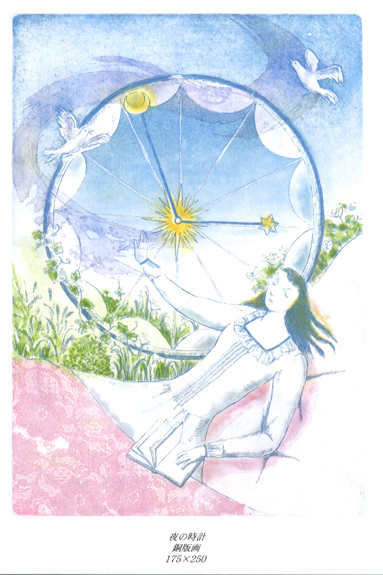

11月の日記(1)
11月の日記(1)

[前の日記] [過去の日記一覧へ] [次の日記]
新しいものは上になります。下
から読んでね(^^)


[前の日記] [過去の日記一覧へ] [次の日記]

[ホーム]

|
2001年11月10日(土) 晴れ 『箱庭〜緑の想い〜』  この間、妹のだんなの森眞二さんが二人展を開いたばかりですが、今度は妹の 森祐子が個展を開くそうです。森 祐 子個展『箱庭〜緑の想い〜』。11月19日(月)〜24日(土)に銀座で開かれて います。ぜひ見にいってやってくださいね。 今回はハーブがテーマだそう。私はこの9月からですが、妹は今年の春くらい からバルコニーでハーブ栽培をしています。特に２人で相談してはじめたわけ じゃないんだけど、偶然ふたりとも今年に入ってから。 妹はどんどん収穫して使っているようだし、農家の息子の父（おじいちゃんと 叔父さんがお米を作っていました）が近くに住んでいてアドバイスをもらえる ので、ハーブたちは元気に育っているはず。絵の構想なんかは夏に練っている はずなので、夏の元気なハーブたちが描かれているはず。それらがどんな風に 描いているのか見てみたいものです。ちょっと楽しみですね。 今は作品の製作や仕事が重なったみたいでに忙しいみたい。妹たちのホームページ「アトリエグロー ブ」のDiary をこまめに更新しているので、その様子がよくわかります。ここのところ、私 より頻繁に更新されています。「忙しい忙しい」と言ってるわりには、舞台を 見にいったりしてるようですが(^^; ところで今回は、私の日本への一時帰国とも重なりそうなので、日程が合った ら、ぜひ行ってみたいと思っています。 2001年11月8日(木) 晴れ 「ぱねろっと」 2年前にも紹介したことのある同僚の まささんが、新しいゲームを作りました。その名も「ぱねろっと」。彼 のまったくのオリジナルのゲームです。 遊び方は「マウスをクリックして色で塗りつぶされているセルを同じ色の枠 があるセルに移動する」というもの。簡単なルールです。きれいな色使いで、 その点も楽しめるんです。 その楽しいところは、1面をクリアするとパスワードがもらえ、次々新しい面 に挑戦することができることです。途中で中断しても、パスワードを入れると 前回中断したところから始めることができます。ノーマルは全部で30面、その あとは「ノーマルプラス」。 進んでいくごとに難しくなっていて、でも、急に難しくなったり、同じような 難しさが続くというようなことがないので、やっているとはまります。彼はも ともといろいろなゲームをするので、その経験が生かされているみたいです (^^; 私は普段まったくゲームはしないのですが、そういう人でも楽しめるように作っ たそうです。確かに。私は現在、5面までクリアしました。3面ではかなり手間 取りましたが、4面からコツがわかってきました。 みなさんも遊んでみてね。そして、どこまでクリアしたか教えてね！ 2001年11月5日(月) 晴れ 「トレーニング」 私がカリフォルニアに渡って今の仕事を初めてから3年がたちました。そのこ ろからこのページを訪問してくれてる人はびっくりしそう。今、会社で新しく うちの部署に来た人のトレーニングをしています。あんなに新人だった私 が．．．と自分でも驚いています。 でも、人をトレーニングするのって思っていた以上にたいへん。今、2人にト レーニングしてるんだけど、同じことを言っても、受け取り方が全然違ったり しますよね。私だったらして欲しいアドバイスでも、相手にとっては余計なこ とだったり、返って混乱させてしまったり。 ふだん普通にやっていることを説明するのも難しい。シンプルなことでも、い ろんなステップがあって、きちんと説明しないとうまく伝わらなかったりする から。私の説明でうまくやってくれたりするとすごく嬉しい。 それと、上から、トレーニングだけではダメと言われていて、必ず仕事への成 果がなくてはいけないのがたいへん。たとえば、新しいツールをつかって仕事 をしてもらうときに、うまくいけばいいんだけど、もしもうまくいかないと、 私もそのツールのことを勉強してから、うまくいかない部分を一緒に解決する ことになる。 そうなると、私とその人の2人分の時間をつかうことになってしまい、時間の 無駄となる。それはダメだと言われている。私が完全にわかっているツールを つかってもらえばいいんだけど、そういう仕事ばかりじゃないから。 だからもし、ある仕事があって、その人が絶対にできると判断したらやっても らえばいいけど、そうでなければ、その人には別のできる仕事を渡して、私が その仕事をひとりでやらなければならない。そこらへんの判断が難しいところ。 でも、すごく勉強になる。 |
|
新しいものは上になります。下から上に読んでね(^^) |
[前の日記] [過去の日記一覧へ] [次の日記]
[ホーム]